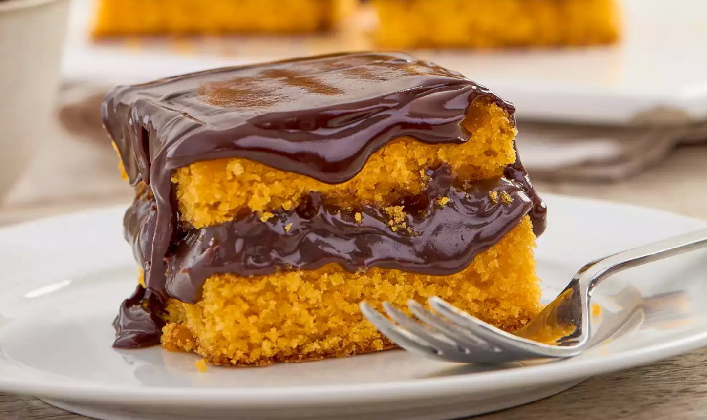

Bem Vindo a pagina de receitas
Bem vindo a Nossa Pagina de Receitas Deliciosas
Descubra receitas Simples e Deliciosas
Home
Bolo De bolo-cenoura
Bolo De Chocolate
Strognoff de Frango
Receitas De Bolo De Cenoura

Ingredientes
2 Cenouras Médias
3 Ovos
1/2 Xicara de óleo
2 xicaras de Açucar
2 e 1/2 Xicaras de Farinha de trigo
1 Colher de sopa dde Fermento
Modo de preparo
Bata no liquidificador as Cenouras , os ovos e o óleo
Adicione açucar e bata mais um pouco
Adicione açucar e bata mais,Misture com farinha e Fermento
Asse em forno pré aquiecido a 180gC por aproximadamente 40 minutos